전기기능사 (2016-07-10 기출문제)
1과목: 전기 이론
1. 2전력계법으로 3상 전력을 측정할 때 지시값이 P1=200W, P2=200W이었다. 부하전력(W)은?
- 600
- 500
- 400
- 300
(정답률: 87%)

2. 다음은 어떤 법칙을 설명한 것인가?
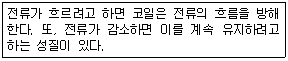
- 쿨롱의 법칙
- 렌츠의 법칙
- 패러데이의 법칙
- 플레밍의 왼손 법칙
(정답률: 74%)
3. 플레밍의 왼손법칙에서 전류의 방향을 나타내는 손가락은?
- 엄지
- 검지
- 중지
- 약지
(정답률: 78%)
4. 진공 중에 10μC과 20μC의 점전하를 1m의 거리로 놓았을 때 작용하는 힘(N)은?
- 18×10-1
- 2×10-2
- 9.8×10-9
- 98×10-9
(정답률: 58%)
5. 어느 회로의 전류가 다음과 같을 때, 이 회로에 대한 전류의 실효값(A)은?
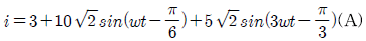
- 11.6
- 23.2
- 32.2
- 48.3
(정답률: 56%)
6. 전력량 1Wh와 그 의미가 같은 것은?
- 1C
- 1J
- 3600C
- 3600J
(정답률: 74%)
7. 평형 3상 회로에서 1상의 소비전력이 P(W)라면, 3상회로 전체 소비전력(W)은?
- 2P
- √2 P
- 3P
- √3 P
(정답률: 61%)
8. 어떤 교류회로의 순시값이 v=√2Vsinωt(V)인 전압에서 ωt=π/6(rad)일 때 100√2V이면 이 전압의 실효값(V)은?
- 100
- 100√2
- 200
- 200√2
(정답률: 53%)
9. 공기 중에서 m(Wb)의 자극으로부터 나오는 자속수는?(문제 오류로 가답안 발표시 1번으로 발표하였지만 확정답안 발표시 1, 4번이 정답 처리되었습니다. 여기서는 4번을 누르면 정답 처리 됩니다.)
- m
- μ0m
- 1/m
- m/μ0
(정답률: 77%)
10. 그림과 같은 RC 병렬회로의 위상각 θ는?
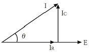
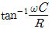
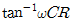
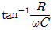
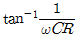
(정답률: 48%)
11. 0.2℧의 컨덕턴스 2개를 직렬로 접속하여 3A의 전류를 흘리려면 몇 V의 전압을 공급하면 되는가?
- 12
- 15
- 30
- 45
(정답률: 52%)
12. 비유전율 2.5의 유전체 내부의 전속밀도가 2×10-6C/m2되는 점의 전기장의 세기는 약 몇 V/m 인가?
- 18×104
- 9×104
- 6×104
- 3.6×104
(정답률: 42%)
13. 1차 전지로 가장 많이 사용되는 것은?
- 니켈·카드뮴전지
- 연료전지
- 망간건전지
- 납축전지
(정답률: 70%)
14. 그림과 같은 회로에서 a-b간에 E(V)의 전압을 가하여 일정하게 하고, 스위치 S를 닫았을 때의 전전류 I(A)가 닫기 전 전류의 3배가 되었다면 저항 Rx의 값은 약 몇 Ω인가?
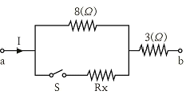
- 0.73
- 1.44
- 2.16
- 2.88
(정답률: 49%)
15. 정상상태에서의 원자를 설명한 것으로 틀린 것은?
- 양성자와 전자의 극성은 같다.
- 원자는 전체적으로 보면 전기적으로 중성이다.
- 원자를 이루고 있는 양성자의 수는 전자의 수와 같다.
- 양성자 1개가 지니는 전기량은 전자 1개가 지니는 전기량과 크기가 같다.
(정답률: 65%)
16. R1(Ω), R2(Ω), R3(Ω)의 저항 3개를 직렬 접속했을 때의 합성저항(Ω)은?
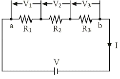
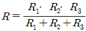
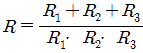
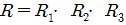
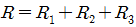
(정답률: 72%)
17. 3kW의 전열기를 1시간 동안 사용할 때 발생하는 열량(kcal)은?
- 3
- 180
- 860
- 2580
(정답률: 57%)
18. 영구자석의 재료로서 적당한 것은?
- 잔류자기가 적고 보자력이 큰 것
- 잔류자기와 보자력이 모두 큰 것
- 잔류자기와 보자력이 모두 작은 것
- 잔류자기가 크고 보자력이 작은 것
(정답률: 65%)
19. 전기력선에 대한 설명으로 틀린 것은?
- 같은 전기력선은 흡인한다.
- 전기력선은 서로 교차하지 않는다.
- 전기력선은 도체의 표면에 수직으로 출입한다.
- 전기력선은 양전하의 표면에서 나와서 음전하의 표면에서 끝난다.
(정답률: 66%)
20. 다음 설명 중 틀린 것은?
- 같은 부호의 전하끼리는 반발력이 생긴다.
- 정전유도에 의하여 작용하는 힘은 반발력이다.
- 정전용량이란 콘덴서가 전하를 축적하는 능력을 말한다.
- 콘덴서는 전압을 가하는 순간은 콘덴서는 단락상태가 된다.
(정답률: 53%)
2과목: 전기 기기
21. 고장 시의 불평형 차전류가 평형 전류의 어떤 비율 이상으로 되었을 때 동작하는 계전기는?
- 과전압 계전기
- 과전류 계전기
- 전압 차동 계전기
- 비율 차동 계전기
(정답률: 63%)
22. 단락비가 큰 동기 발전기에 대한 설명으로 틀린 것은?
- 단락 전류가 크다.
- 동기 임피던스가 작다.
- 전기자 반작용이 크다.
- 공극이 크고 전압 변동률이 작다.
(정답률: 43%)
23. 전압을 일정하게 유지하기 위해서 이용되는 다이오드는?
- 발광 다이오드
- 포토 다이오드
- 제너 다이오드
- 바리스터 다이오드
(정답률: 70%)
24. 변압기의 철심에서 실제 철의 단면적과 철심의 유효 면적과의 비를 무엇이라고 하는가?
- 권수비
- 변류비
- 변동률
- 점적률
(정답률: 51%)
25. 단상 유도 전동기의 기동 방법 중 기동 토크가 가장 큰 것은?
- 반발 기동형
- 분상 기동형
- 반발 유도형
- 콘덴서 기동형
(정답률: 58%)
26. 직류기의 파권에서 극수에 관계없이 병렬회로수 a는 얼마인가?
- 1
- 2
- 4
- 6
(정답률: 69%)
27. 변압기의 무부하 시험, 단락 시험에서 구할 수 없는 것은?
- 동손
- 철손
- 절연내력
- 전압 변동률
(정답률: 54%)
28. 주파수 60Hz를 내는 발전용 원동기인 터빈 발전기의 최고 속도(rpm)는?
- 1800
- 2400
- 3600
- 4800
(정답률: 67%)
29. 직류 전동기의 최저 절연 저항값(MΩ)은?
- 정격전압(V) / (1000＋정격출력(kW))
- 정격출력(kW) / (1000＋정격입력(kW))
- 정격입력(kW) / (1000＋정격출력(kW))
- 정격전압(V) / (1000＋정격입력(kW))
(정답률: 39%)
30. 동기 발전기의 병렬 운전 중 기전력의 크기가 다를 경우 나타나는 현상이 아닌 것은?
- 권선이 가열된다.
- 동기화 전력이 생긴다.
- 무효 순환 전류가 흐른다.
- 고압 측에 감자 작용이 생긴다.
(정답률: 37%)
31. 변압기의 권수비가 60일 때 2차측 저항이 0.1Ω이다. 이것을 1차로 환산하면 몇 Ω인가?
- 310
- 360
- 390
- 410
(정답률: 61%)
32. 전압 변동률 ε의 식은? (단, 정격 전압 Vn(V)무부하 전압 V0(V)이다.)
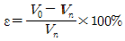
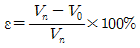
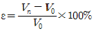
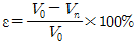
(정답률: 47%)
33. 6극 36슬롯 3상 동기 발전기의 매극 매상당 슬롯수는?
- 2
- 3
- 4
- 5
(정답률: 53%)
34. 주파수 60Hz의 회로에 접속되어 슬립 3%, 회전수 1164rpm으로 회전하고 있는 유도전동기의 극수는?
- 4
- 6
- 8
- 10
(정답률: 52%)
35. 그림은 트랜지스터의 스위칭 작용에 의한 직류 전동기의 속도제어 회로이다. 전동기의 속도가
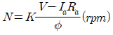
이라고 할 때, 이 회로에서 사용한 전동기의 속도제어법은?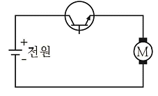
- 전압제어법
- 계자제어법
- 저항제어법
- 주파수제어법
(정답률: 49%)
36. 계자 권선이 전기자와 접속되어 있지 않은 직류기는?
- 직권기
- 분권기
- 복권기
- 타여자기
(정답률: 66%)
37. 대전류·고전압의 전기량을 제어할 수 있는 자기소호형 소자는?
- FET
- Diode
- Triac
- IGBT
(정답률: 52%)
38. 교류 전동기를 기동할 때 그림과 같은 기동 특성을 가지는 전동기는? (단, 곡선 (1)∼(5)는 기동 단계에 대한 토크 특성 곡선이다.)
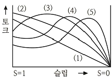
- 반발 유도 전동기
- 2중 농형 유도 전동기
- 3상 분권 정류자 전동기
- 3상 권선형 유도 전동기
(정답률: 52%)
39. 1차 권수 6000, 2차 권수 200인 변압기의 전압비는?
- 10
- 30
- 60
- 90
(정답률: 73%)
40. 3상 유도 전동기의 정격 전압을 Vn(V), 출력을 P(kW), 1차 전류를 I1(A),역률을 cosθ라 하면 효율을 나타내는 식은?
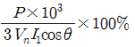
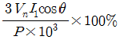
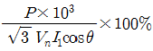
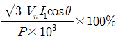
(정답률: 49%)
3과목: 전기 설비
41. 합성수지 전선관 공사에서 관 상호간 접속에 필요한 부속품은?
- 커플링
- 커넥터
- 리이머
- 노멀 밴드
(정답률: 60%)
42. 다음 중 배선기구가 아닌 것은?
- 배전반
- 개폐기
- 접속기
- 배선용차단기
(정답률: 51%)
43. 전기설비기술기준의 판단기준에서 가공전선로의 지지물에 하중이 가하여 지는 경우에 그 하중을 받는 지지물의 기초의 안전율은 얼마 이상인가?
- 0.5
- 1
- 1.5
- 2
(정답률: 47%)
44. 최대 사용 전압이 220V인 3상 유도전동기가 있다. 이것의 절연 내력 시험 전압은 몇 V로 하여야 하는가?
- 330
- 500
- 750
- 1⑤0
(정답률: 44%)
45. 피뢰기의 약호는?
- LA
- PF
- SA
- COS
(정답률: 61%)
46. 배전반을 나타내는 그림 기호는?
(정답률: 62%)
47. 조명공학에서 사용되는 칸델라(cd)는 무엇의 단위인가?
- 광도
- 조도
- 광속
- 휘도
(정답률: 54%)
48. 케이블 공사에서 비닐 외장 케이블을 조영재의 옆면에 따라 붙이는 경우 전선의 지지점 간의 거리는 최대 몇 m인가?
- 1.0
- 1.5
- 2.0
- 2.5
(정답률: 43%)
49. 흥행장의 저압 옥내배선, 전구선 또는 이동 전선의 사용전압은 최대 몇 V 미만인가?
- 400
- 440
- 450
- 750
(정답률: 57%)
50. 누전차단기의 설치목적은 무엇인가?
- 단락
- 단선
- 지락
- 과부하
(정답률: 49%)
51. 절연물 중에서 가교폴리에틸렌(XLPE)과 에틸렌 프로필렌고무혼합물(EPR)의 허용온도(℃)는?
- 70(전선)
- 90(전선)
- 95(전선)
- 1⑤(전선)
(정답률: 54%)
52. 금속덕트를 조영재에 붙이는 경우에는 지지점간의 거리는 최대 몇 m 이하로 하여야 하는가?
- 1.5
- 2.0
- 3.0
- 3.5
(정답률: 40%)
53. 금속 전선관 공사에서 사용되는 후강 전선관의 규격이 아닌 것은?
- 16
- 28
- 36
- 50
(정답률: 57%)
54. 완전 확산면은 어느 방향에서 보아도 무엇이 동일한가?
- 광속
- 휘도
- 조도
- 광도
(정답률: 50%)
55. 전기설비기술기준의 판단기준에서 교통신호등 회로의 사용전압이 몇 V를 초과하는 경우에는 지락 발생 시 자동적으로 전로를 차단하는 장치를 시설하여야 하는가?
- 50
- 100
- 150
- 200
(정답률: 49%)
56. 구리 전선과 전기 기계기구 단자를 접속하는 경우에 진동 등으로 인하여 헐거워질 염려가 있는 곳에는 어떤 것을 사용하여 접속하여야 하는가?(오류 신고가 접수된 문제입니다. 반드시 정답과 해설을 확인하시기 바랍니다.)
- 정 슬리브를 끼운다.
- 평와셔 2개를 끼운다.
- 코드 패스너를 끼운다.
- 스프링 와셔를 끼운다.
(정답률: 67%)
57. 금속관을 구부릴 때 그 안쪽의 반지름은 관안지름의 최소 몇 배 이상이 되어야 하는가?
- 4
- 6
- 8
- 10
(정답률: 63%)
58. 옥내 배선을 합성수지관 공사에 의하여 실시 할 때 사용할 수 있는 단선의 최대 굵기(mm2)는?
- 4
- 6
- 10
- 16
(정답률: 42%)
59. 450/750V 일반용 단심 비닐절연전선의 약호는?
- NRI
- NF
- NFI
- NR
(정답률: 50%)
60. 차단기 문자 기호 중 “OCB”는?
- 진공 차단기
- 기중 차단기
- 자기 차단기
- 유입 차단기
(정답률: 62%)
P1 + P2 = 400